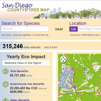
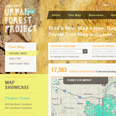

OpenTreeMap is open source software for collaborative,
geography-enabled urban tree inventory.
Why use OpenTreeMap?
OpenTreeMap provides an easy-to-use public inventorying platform that enables individuals, organizations, and governments to search and contribute to a collaborative, interactive, and dynamic map of a community's tree population. Urban street trees have many proven environmental, economic, and aesthetic benefits and an accurate and current inventory is essential for effectively and efficiently caring for this vital community resource. OpenTreeMap can be used in a single municipality or cover a broader geographic region, anywhere in the world."With the Urban Forest Map, we're able to reach out to new audiences and help San Franciscans learn about the great benefits our trees provide."
Dan Flanagan
Executive Director, Friends of the Urban Forest
System Requirements
The software is built using several open source technologies including:- Python
- GeoServer
- Django
- PostgreSQL
- PostGIS
- Base Maps (OpenStreetMap, ArcGIS.com, etc)
The software can be hosted in several environments:
- Amazon Web Services
- Azavea Hosting
- On Premise Installation
- Hosting services such as Rackspace or Linode
 Photo by Pennsylvania Horticultural Society
Photo by Pennsylvania Horticultural Society
Main Features
- Search for trees by species, location, or advanced filters such as diameter, date planted, or tree characteristics (flowering, native, etc.)
- Add trees individually or load tree datasets into the system
- Edit and add information about existing tree records including species name, location, height, plot size and type, conditions, actions needed, funding sources, data owner
- Upload tree photos
- Export tree lists as KML or CSV files
- Automatically calculate ecosystem benefits (greenhouse gas, water, energy, air quality) based on a tree's species and diameter
- Monitor user accounts, comments, and system edits
- Get optional integrated tree key to assist in identifying tree species
- Mobile version available
- Read Wes Kocher's review of OpenTreeMap. Wes is ISA's Technical Resource Manager.
Who's Using OpenTreeMap
PhillyTreeMap

Urban Forest Map

GreenprintMaps

San Diego Tree Map
Grand Rapids Urban Forest Project

Services
Documentation
Importing Data »First Installation »
Support
Report bugs on GitHub »Mailing List »
Tutorial 1: Searching »
Tutorial 2: Adding a Tree »
IRC at #opentreemap on freenode
Webinars
Exploring Mobile Technology w/ OpenTreeMap Mobile »Exploring Collaborative Tree Inventory with OpenTreeMap »
Exploring Community Engagement w/ OpenTreeMap »
Exploring Urban Forest Modeling and Prioritization Tools »
Implementation
Open source code can be daunting if you do not have the technical expertise on your team to build the application.Implementation usually requires:
- Database development
- Software configuration
- Graphic design
- Upload of tree datasets from local organizations
- Software customization
- Hosting
Our software partner, Azavea, provides implementation support and customization services.